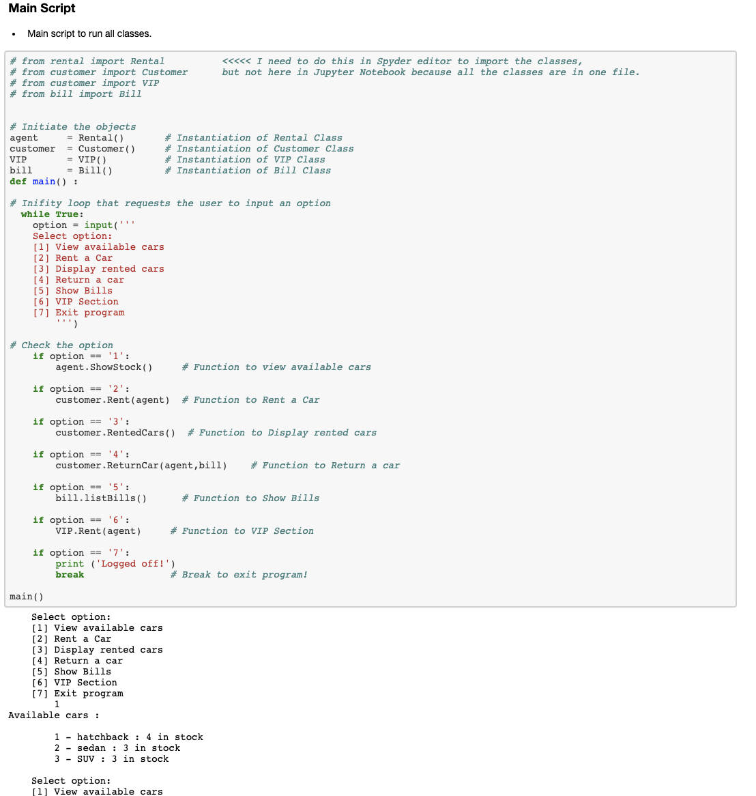
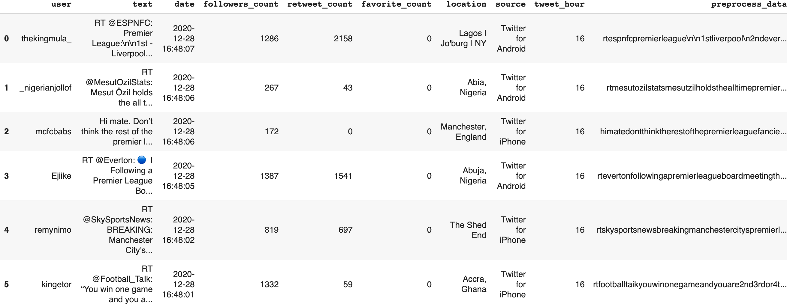
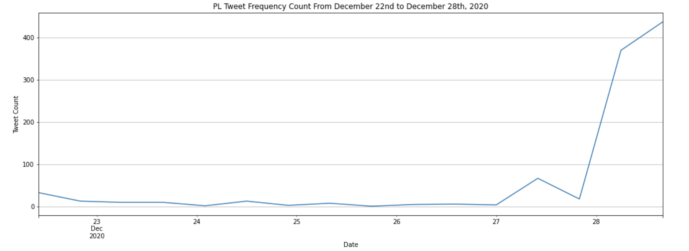
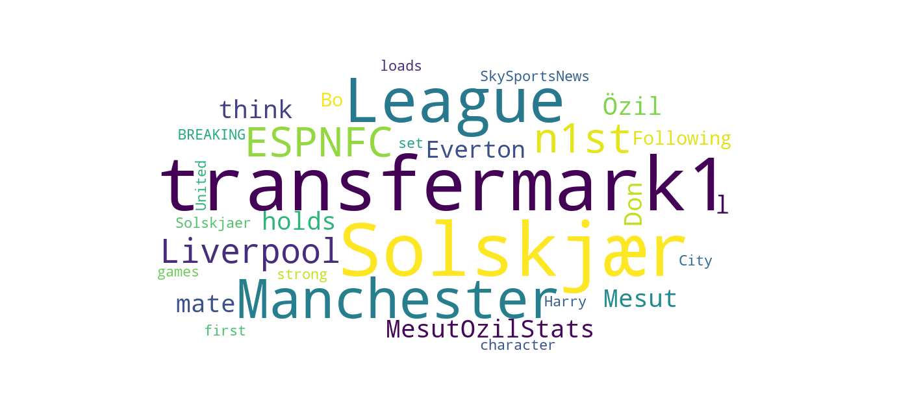
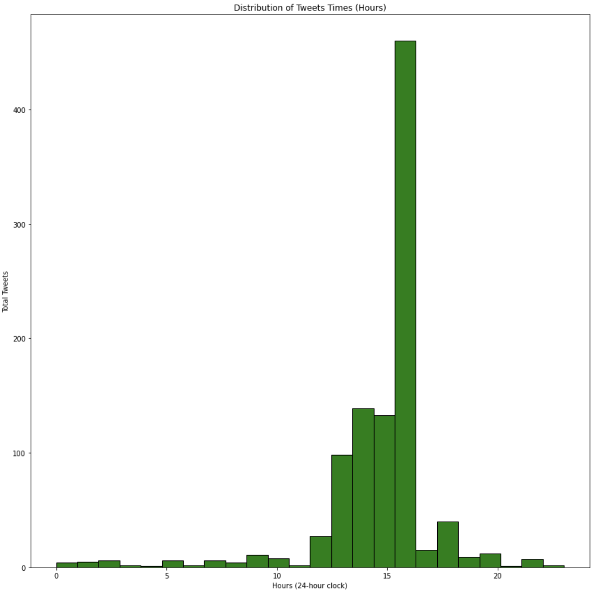
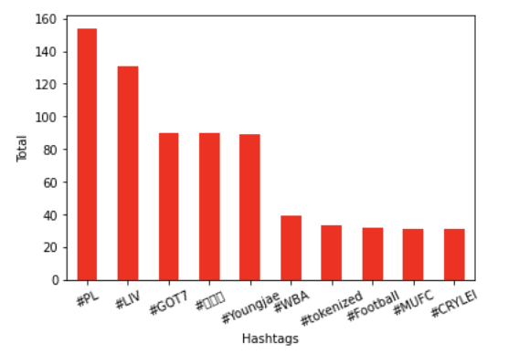

Software Development: Programming and Algorithms (SDPA) Coursework
The coursework of this unit consists of three main parts:
1- Software Development
In this part, I built a car rental system that allows customers to interact with it including checking available cars in the stock as well enabling the user to rent a car and return it to issue a bill. I instantiated three classes:
- - Customer Class: contains four methods (Rent, ReturnCar, RentedCars, VIP) and it is responsible for managing user actions. It is integrated to work with Rental and Bill classes.
- - Rental Class contains three methods (init(self), ShowStock, RentCar) and its main responsibility is to update cars status in the inventory and calculate the price of the rent.
- - Bill Class contains two methods (newBill, listBills) and its main responsibility is to issue a bill for customers after they return a car.
View a Snippet of The Source Code Below:

2- Algorithm Analysis
In this part, I wrote a function that takes two lists and produces an output list where the first list (L1) sorted according to the ordering of the elements sequence in the second list (L2). Other elements in the first list (L1) that is not present in the second list (L2), will be inserted at the end of the output-list in sorted order.
3- Data Analytics
In this part, the data source was Twitter. I collected Premier League (PL) related tweets using tweepy
built-in library in Python and saved them into a CSV file.
I then did a comprehensive exploratory data analysis on this dataset. The variables of interests were
['user', 'text', 'date', 'followers_count', 'retweet_count', 'favorite_count', 'location', 'source',
'tweet_hour'].
I did the following steps:
- - Setting up the virtual environment.
- - Collecting the dataset from Twitter.
- - Data preparation & cleaning
- - Exploratory Data Analysis (EDA) with questions to answer
- - Summary of the findings
Dataset Dataframe Overview

Dataset General statistics
- - Total Number of Tweets: 1000
- - Retweets Average: 89
- - Followers Average: 20712
- - Favorite Average: 1
Some of the analysis findings
Analysis #1:
In this analysis an attempt to have an overview of tweets stream through a period of time (every ten hours). It seems that the tweets flow were steady throughout the period (December 23rd - December 26th). Then, There is a sharp increase of tweets by the 27th then decreased a bit at the end of the day. Eventually, it rises sharply again on the 28th as these two days 27th and 28th (Sunday and Monday) represents Premier League matches day and so as it is shown on the graph, people interact more on Twitter on these days. 
Analysis #2:
In this analysis an attempt to explore the most frequent words in the dataset. based on the wordcloud findings, It seems that the top words that most users tweet about are evolving around the transfer period of time (transfermark), team's coaches such as Man United team's coach (Solskjaer) as well as teams names during matches day. Additionally, Some leading sport TV channels such as (ESPNFC). 
Analysis #3:
In this analysis an attempt to explore the tweets time distributions throghout the day. As shown in Histogram graph, it seems that people interact and tweet the most during midday from 12 pm until about 4 pm. This is the time where most PL football matches happen. 
Analysis #4:
In this analysis an attempt to find the top PL hashtags in the dataset. Based on the finding it seems that most people interact with the main hashtag of the league which is (#PL) with more than 150 tweets and also (#LIV)Liverpool team as they are number on in the league table at the moment the dataset was collected. Also, there is interactions from Korean people as the third top hashtag (#갓세븐) which has the same meaning of the fourth hashtag (#GOT7). 